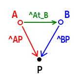

旋转矩阵与坐标变换
旋转矩阵
旋转方向正负的定义
在笛卡尔坐标系中，当我们讨论旋转方向时，首先需要判断所讨论坐标系是“右手系”还是“左手系”，右手系的方向遵循“右手定则”，左手系则遵循“左手定则”，其含义为：用右手或左手握住坐标轴，大拇指朝向轴的正半部分，此时其余四指自然握紧形成的方向即为绕该轴旋转的“正方向”。
数学与物理中描述角度或角速度时，在没有特别说明是“左手系”的情况下，默认使用的是“右手系”。
旋转矩阵的定义：
右手系，旋转角值沿右手螺旋方向为正（即逆时针为正）
绕\(Z\)轴转\(\alpha\) \[ R_z = \begin{bmatrix} cos(\alpha) &-sin(\alpha) &0 \\ sin(\alpha) &cos(\alpha) &0 \\ 0 &0 &1 \end{bmatrix} \]
绕\(Y\)轴转\(\beta\) \[ R_y = \begin{bmatrix} cos(\beta) &0 &sin(\beta) \\ 0 &1 &0 \\ -sin(\beta) &0 &cos(\beta) \end{bmatrix} \]
绕\(X\)轴转\(\gamma\) \[ R_x = \begin{bmatrix} 1 &0 &0 \\ 0 &cos(\gamma) &-sin(\gamma) \\ 0 &sin(\gamma) &cos(\gamma) \end{bmatrix} \]
旋转矩阵的本质
旋转矩阵 \(R\) 的行代表在旋转后的坐标系下，原坐标系的单位向量\((\vec i,\vec j, \vec k)\)的坐标
旋转矩阵 \(R\) 的列代表在原坐标系下，旋转后的坐标系的单位向量\((\vec i,\vec j, \vec k)\)的坐标
欧拉角
欧拉角分为内旋（坐标系随动）和外旋（坐标系固定），外旋欧拉角也称为RPY（Roll Yaw Pitch）角，其参考的旋转系为Z轴向上的笛卡尔右手系。
在没有特殊说明的情况下，默认使用外旋欧拉角（也叫RPY角）
内旋欧拉角与外旋欧拉角顺序相反时得出的旋转矩阵相同，例如\(R=Z_1X_2Y_3\)既可以表示Y->X->Z外旋，也可以表示Z->X->Y内旋。
只有在欧拉角为内旋，\(Pitch\)在中间， 并且 \(Pitch=\cfrac{\pi}{2}\) 时出现万向锁。
万向锁的具体表现形式是：任意 \((a,\frac{\pi}{2},b)\) 的旋转方式都可以用 \((a-b, \frac{\pi}{2},0)\) 来表示，即失去了一个旋转自由度。
内旋和外旋的矩阵转换关系：交换第一次和第三次旋转的顺序可得到相同的旋转矩阵。
坐标变换
平移向量
坐标系间变换的标准描述方式
符号描述方式：
\(^AP\) ：点 \(P\) 在坐标系 \(A\) 中的坐标
\(^AP_{Borg}\) 或 \(^At_{Borg}\)或\(^At_B\)：坐标系 \(B\) 的原点在坐标系 \(A\) 中的坐标向量
\(^AR_B\)：坐标系 \(B\) 到坐标系 \(A\) 的旋转矩阵
\(^AT_B\)：坐标系 \(B\) 到坐标系 \(A\) 的齐次变换矩阵
基本变换公式：
- \(^AP = {^AR_B}\space {^BP} + ^At_B\)
- \(^AP = {^AT_B}^BP\)

坐标变换过程描述举例
有一个点\(P\)，基于（笛卡尔右手）坐标系\(A\)描述为\(^AP\)，此时坐标系\(A\)（按照外旋欧拉角/RPY角的方向）绕\(Z\)轴（沿笛卡尔右手系方向）旋转45度，并（使坐标系\(A\)的原点）沿着坐标系\(A\)的\(X、Y、Z\)方向分别移动\((1,2,3)\)，得到坐标系\(B\)，要求点\(P\)基于坐标系\(B\)的描述\(^BP\)
- 该描述使用上述旋转矩阵公式得到的\(R\)为\(^BR_A\)，即坐标系A到\(B\)的旋转矩阵
- 使用公式 \(^BP = {^BR_A}\space {^AP} + ^Bt_A\) 完成坐标变换
坐标系间变换推导实例
已知坐标系\(W\)与\(A\)的位姿变换关系，以及\(W\)与\(B\)的位姿变换关系，可求出\(A\)与\(B\)的位姿变换关系
例子：坐标系\(A\)的原点在\(A\)中描述 -> 在\(W\)中描述 -> 在\(B\)中描述
已知世界坐标系\(W\)，以及坐标系\(A\)和\(B\)，由上述关系可得两个转换式： \[ ^WP=^WR_A\space^AP+^Wt_{Aorg}\space \tag{1} \]
\[ ^WP=^WR_B\space^BP+^Wt_{Borg}\space \tag{2} \]
由 \((1)\) 可知坐标系 \(A\) 的原点在世界系 \(W\) 中的坐标为： \[ ^WP_{Aorg}=^WR_A\space^AP_{Aorg}+^Wt_{Aorg} \tag{3} \] 由 \((2)\) 可推得任意世界坐标系中的点\(^WP\)在坐标系 \(B\) 中的坐标为： \[ ^BP=(^WR_B)^{-1}(^WP-^Wt_{Borg}) \tag{4} \] 将 \((3)\) 中求出的\(A\)原点在世界系的坐标代入到 \((4)\) 中可得： \[ \begin{aligned} ^BP_{Aorg} &=(^WR_B)^{-1}(^WP_{Aorg}-^Wt_{Borg})\\\\ &=(^WR_B)^{-1}(^WR_A\space^AP_{Aorg}+^Wt_{Aorg}-^Wt_{Borg}) \\\\ &=((^WR_B)^{-1}\space^WR_A\space)^AP_{Aorg} + (^WR_B)^{-1}(^Wt_{Aorg}-^Wt_{Borg}) \end{aligned} \] 同时已知： \[ ^BP_{Aorg}=^BR_A\space^AP_{Aorg}+Bt_{Aorg} \tag{5} \] 因此易得从\(A\)系到\(B\)系的位姿变换关系： \[ ^BR_A = (^WR_B)^{-1}\space^WR_A \tag{6} \]
\[ ^Bt_A = (^WR_B)^{-1}(^Wt_{Aorg}-^Wt_{Borg}) \tag{7} \]
其中 \(^BR_A\) 表示从 \(A\) 系到 \(B\) 系的旋转变换（姿态），\(^Bt_A\)表示 \(A\) 系原点在 \(B\) 系中的坐标（位置）
测试程序
分别使用 Eigen 与 OpenCV
1 |
|